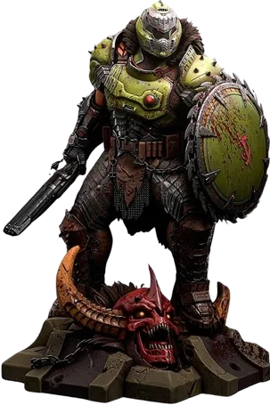

Se há uma coisa que mantém o nome Doom no topo da lista de jogos de tiro em primeira pessoa, é como ele está sempre reinventando ousadamente, sendo um exército de um homem só, superpoderoso e durão, contra os exércitos do Inferno. Três décadas atrás, tivemos o jogo de tiro original da velha guarda, depois um jogo de tiro de terror cheio de jumpscares, depois uma releitura moderna do jogo de tiro da velha guarda e um jogo de tiro de ação focado em mobilidade em Doom Eternal, de 2020. A forma que Doom: The Dark Ages assume é, na verdade, muito diferente de Eternal, um jogo que classifico como um dos meus jogos de tiro favoritos de todos os tempos. Na verdade, é tão diferente que inicialmente fiquei desanimado com a sensação mais pesada do movimento, a ausência de um pulo duplo ou airdash e o caos absoluto de ter campos abertos com aparentemente centenas de inimigos se aproximando de mim de todos os lados.
Doom The Dark Ages é uma adição digna de um trono à franquia Se você é um fã de Doom de longa data ou apenas alguém que prospera em combate afiado e jogabilidade cheia de adrenalina, Doom The Dark Ages é tudo o que você estava esperando - e muito mais. O combate aqui é inventivo, viciante e infinitamente recompensador. Uma vez que você pega seu ritmo no fluxo da batalha, há poucas experiências de jogo tão satisfatórias. A introdução da serra de escudo é nada menos que uma mudança de jogo.
Longe de ser apenas "Mais Doom", Doom: The Dark Ages é uma nova versão da lendária série de tiro, mais pesada e realista, mas não menos enérgica e emocionante. O novo escudo é uma adição excepcional que adiciona inúmeras opções ofensivas e defensivas e, quando combinado com o extenso arsenal de armas tradicionais de Doom, oferece inúmeras maneiras divertidas e emocionantes de derrotar as centenas e milhares de demônios que se interpõem em seu caminho. Adicione a isso uma trilha sonora de heavy metal turbinada, complementando o excelente design de armas, níveis e inimigos, e a Id provou mais uma vez que, como um tiro de superespingarda à queima-roupa, eles não erram.